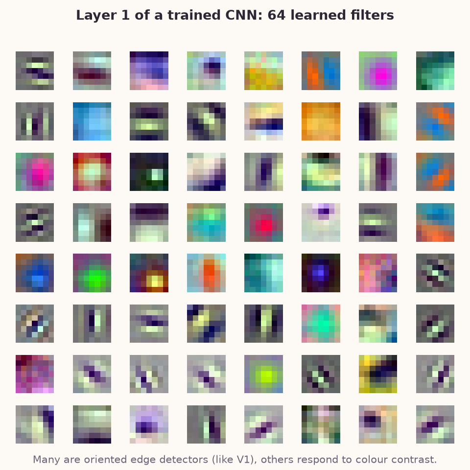
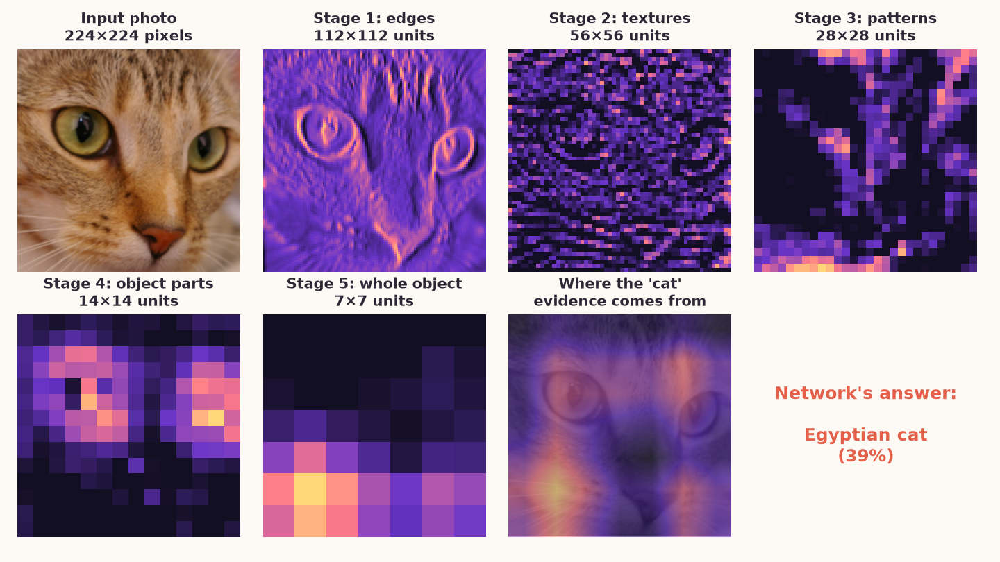
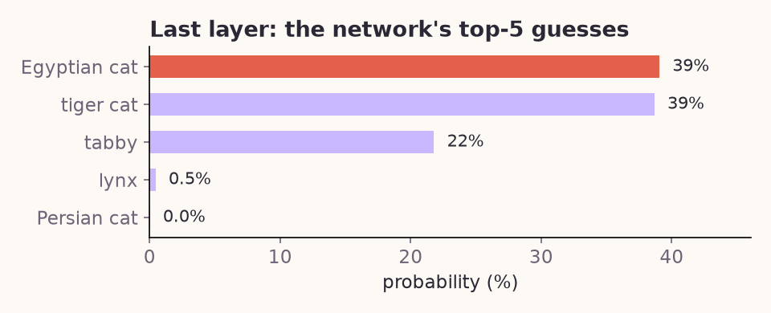

From edges to objects: how the brain sees
You recognise a friend's face in about a tenth of a second. Yet the first cells in your visual cortex don't see faces at all. They see tiny edges. In 1959, David Hubel and Torsten Wiesel found that single neurons in primary visual cortex (V1) fire for a bar of light at one particular angle and stay quiet for the others. That discovery later earned them a Nobel Prize.
From there, information climbs a hierarchy: V1 → V2 → V4 → inferior temporal cortex (IT). At each step, neurons combine the outputs of the step below, so they respond to larger parts of the image and to more complex patterns: edges, then corners and curves, then object parts, and finally whole objects.
1 · Your drawing
2 · Edge cells (V1)
3 · Pooled edges
4 · Corner cells (V2/V4)
5 · Object cells (IT)
Draw in the first panel with your mouse or finger. Each later stage is computed live from the one before it.
What each stage does
Edge cells. Four small filters slide over the image, one per angle. Each filter is a Gabor pattern, a close mathematical match to the receptive fields of V1 simple cells. A cell fires only when the image under it matches its preferred angle, and cells tuned to other angles at the same place suppress each other, so the best match wins.
Pooled edges. Each unit takes the strongest response in a small neighbourhood. The map gets coarser, but the edge is still detected if it shifts a little. V1 complex cells behave this way: they care about the angle more than the exact position.
Corner cells. Each unit fires when two different angles meet in the same place, a new feature built only by combining simpler ones. Neurons in V2 and V4 respond to corners, junctions and curves in a similar way. The ends of a straight line also light up, because the edge "fades out" there. Real cortex has end-stopped cells that do the same.
Object cells. Each object cell looks at the whole shape at once: which edge angles appear, where they sit in the shape (top, bottom, left, right) and how many corners there are. It compares this pattern with what it learned from a few examples of its shape, and fires in proportion to the match. Because it measures positions relative to the shape itself, it doesn't care where on the canvas you draw, or how big. Neurons in IT show the same tolerance: a face cell fires for a face whether it is near or far, left or right.
The same idea in a CNN
A convolutional neural network (CNN) is built from the same steps you just watched: convolution (a bank of filters sliding over the image), a threshold (ReLU), and pooling, stacked many times and ending in units that stand for whole objects.
| Stage | Brain | This demo | CNN |
|---|---|---|---|
| 1 | Retina | Your drawing | Input image |
| 2 | V1 simple cells | 4 hand-made edge filters | Layer 1: dozens of learned filters |
| 3 | V1 complex cells | Max pooling | Pooling layer |
| 4 | V2 / V4 | Corner cells | Middle layers: textures, corners, parts |
| 5 | IT cortex | 5 object cells, 5 examples each | Final layer: 1000+ object classes |
The big difference is that a CNN learns every filter from millions of labelled photos instead of having them designed by hand. Remarkably, it ends up with the same kind of hierarchy: edge detectors first, then textures and object parts, then whole objects. You can browse many more examples in Olah et al.'s Feature Visualization.
Inside a real CNN
The demo above uses filters I designed by hand. To check that the same hierarchy appears in a network that learned everything by itself, I took ResNet-18, a standard CNN already trained by others on 1.2 million labelled photos (ImageNet, 1000 object categories). I did not train or change it; I only looked inside. In four steps:
- Read its first-layer filters: the network's own "V1".
- Show it one photo (a cat) and record what each of its five stages computes.
- Ask which parts of the photo made it say "cat".
- Read its final answer: the five most likely categories.
Step 1 · The learned edge detectors
What I did: the first layer of ResNet-18 is a bank of 64 small filters, each 7×7 pixels in three colour channels. I simply drew them as images. How to read it: each square is one filter, the pattern it "looks for" in the image. Nobody designed these; they emerged from training. Yet many are light–dark stripes at different angles: oriented edge detectors, just like the Gabor filters in the demo and the V1 cells Hubel and Wiesel found. Others respond to colour contrast.

Steps 2 and 3 · One photo passing through the network
What I did: I fed the network a photo of a cat and recorded the output of each of its five stages. Each stage contains hundreds of units (64 in stage 1, 512 in stage 5); from each stage I show the one unit whose map has the clearest spatial pattern. Then I computed a class activation map: it combines the last stage's maps using the weights the network uses to vote for "cat", showing where that vote comes from.
How to read it: in each map, bright means "this unit fires strongly here". Moving from stage 1 to stage 5, the maps get coarser (112×112 → 7×7 units), because each unit now covers a larger patch of the photo, like receptive fields growing from V1 to IT. Stage 1 traces edges in full detail. By stage 4, the unit shown fires around the eyes: an object part, found without anyone telling the network what an eye is. The second-to-last panel glows over the regions that pushed the network towards "cat".

Step 4 · The network's answer
What I did: the last layer has one unit per category (1000 in total). I converted their outputs to probabilities and kept the top five. How to read it: all five guesses are kinds of cat. The network is sure it sees a cat, but less sure which breed, a reasonable answer for a tabby-like cat.

The code
All three figures come from one short Python script you can run yourself:
cnn_figures.py
(needs torch, torchvision, scikit-image).
Its core follows the four steps:
import torch
from skimage import data
from torchvision.models import resnet18, ResNet18_Weights
weights = ResNet18_Weights.IMAGENET1K_V1
net = resnet18(weights=weights).eval() # trained CNN, used as-is
# Step 1: the 64 first-layer filters (64 x 3 x 7 x 7)
filters = net.conv1.weight.detach()
# Step 2: show it a photo and record each stage's output
stages = {"Stage 1": net.relu, "Stage 2": net.layer1, "Stage 3": net.layer2,
"Stage 4": net.layer3, "Stage 5": net.layer4}
maps = {}
for name, layer in stages.items():
layer.register_forward_hook(lambda m, i, out, name=name: maps.__setitem__(name, out[0]))
photo = torch.from_numpy(data.chelsea()).permute(2, 0, 1)
x = weights.transforms()(photo).unsqueeze(0) # resize, crop, normalise
scores = net(x)[0].detach()
# Step 3: where the "cat" vote comes from (class activation map)
cat = scores.argmax()
cam = torch.einsum("c,chw->hw", net.fc.weight[cat], maps["Stage 5"]).clamp(min=0)
# Step 4: the top-5 answers
top = scores.softmax(0).topk(5)
print([weights.meta["categories"][i] for i in top.indices])The match with the brain is more than a visual resemblance. Deeper layers of trained CNNs predict the responses of neurons in V4 and IT (Yamins et al., 2014). In human MEG, early CNN layers match early brain responses (around 100 ms) and deep layers match later ones (Cichy et al., 2016).
Why this matters for EEG
When we study how EEG follows a natural video, we first have to describe the video with numbers. Simple descriptions, such as how much the pixels move, explain only a small part of the brain's response (Yao et al., 2024). CNN layers give a richer description, from edges up to objects, which we can line up against EEG recorded during viewing. That's the subject of an upcoming note.